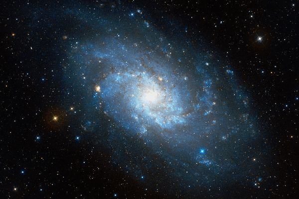
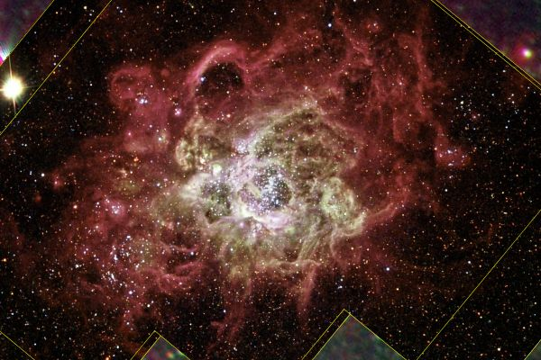

Латинское название: Triangulum
Говорят, созвездие образовано Зевсом по просьбе Деметры, и символизирует остров Сицилию, любимый остров богини, имеющий форму треугольника, хотя, конечно, не такого вытянутого. Может быть, треугольник указывает на три главных города этой греческой колонии. Вообще, треугольник и число три были значимыми символами сицилийцев - также, как и приверженность к культу Деметры.
Арат, однако, уверенно называет созвездие Дельтатоном и даром Нила, то есть считает, что это созвездие - дельта африканской реки. С ним солидарен и Гигин. Как и почему дельта Нила попала на небо, авторы, к сожалению, не поясняют. Иногда говорят не о самой дельте, а о неком государстве в течении Нила, чья форма напоминала треугольник.
А Эратосфен прочитывает в Треугольнике букву Δ греческого - начальную букву имени Зевса (Дий, Δίας). Он считает, что созвездие поместил на небо Гермес, верноподданнически наводивший порядок на небесах.
Близкая к нам большая спиральная галактика, видимая почти анфас. Входит в Местную группу и представляет довольно классическую спиральную галактику. Галактику также называют Цевочное колесо и просто Галактика Треугольника.
В ней находится область активного звездообразования - NGC 604: как все подобные объекты замечательно выглядящая на фотографиях.
 